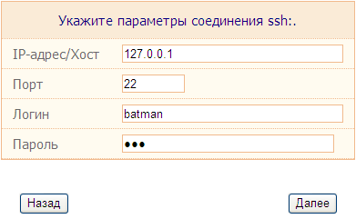
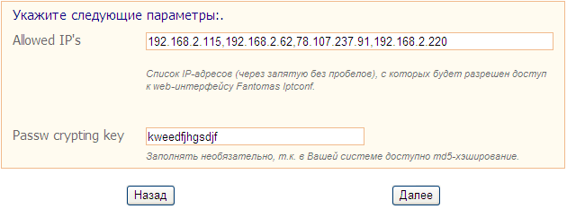
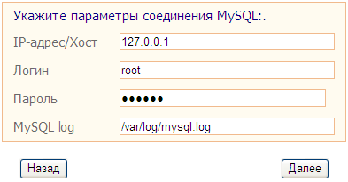
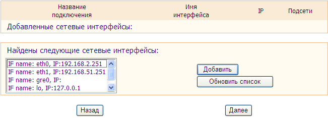
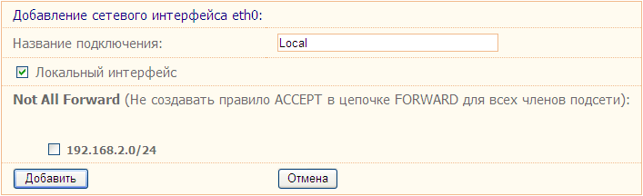
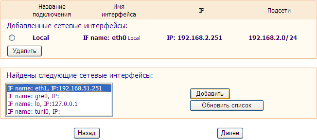
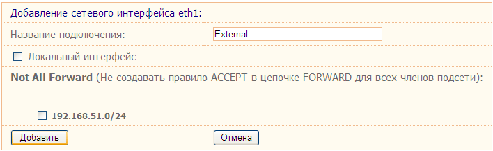
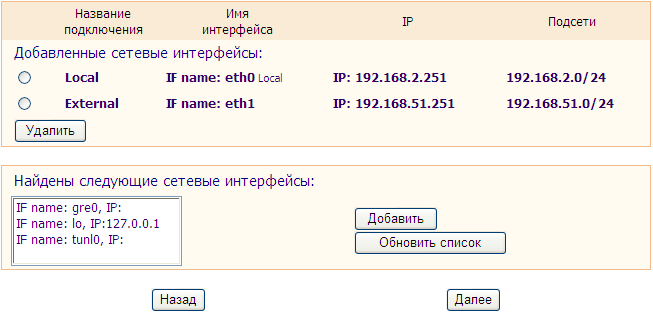
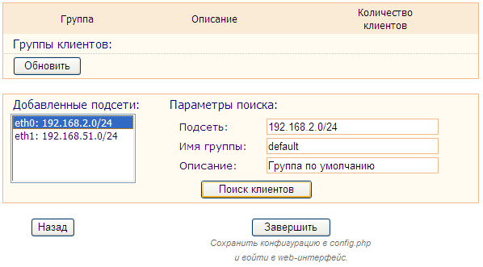
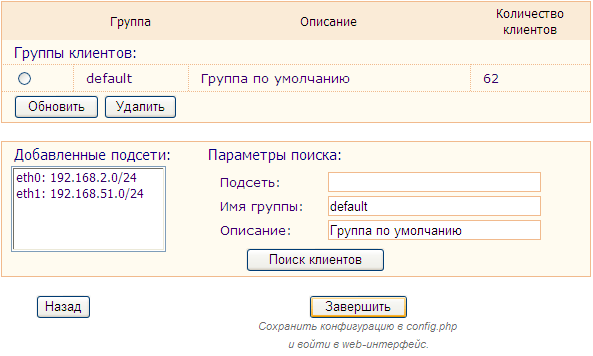

В этом разделе будет рассмотрена процедура установки Fantomas.
Сам разбит на несколько этапов, два из которых проводятся в коммандной строке консоли - конфигурирование и установка, и затем завершающий этап выполняется через веб - мастер начальной настройки.
Перем тем как мы начнем, рекомендую сделать резервную копию текущей конфигурации Iptables (обычно она хранится в /etc/sysconfig/iptables), т.к. в процессе установки инсталлятор очистит текущую конфигурацию.
Если Вы еще не скачали Fantomas, то берем его , сохраняем в каталоге /usr/src, распаковываем:
tar -zxvf fantomas.iptconf-x.x.x.tar.gz
cd iptconf-x.x.x
Перем тем как Вы начнете установку, не будет лишним проверить пути по умолчанию, которые использует установочный скрипт. Для этого откройте скрипт setup в текстовом редакторе и сразу после шапки с закомментированной лого-информацией Вы найдете секцию "Default define section", просмотрите внимательно значение путей, которые в текстовом виде присваиваются переменным, измените при необходимости их на более валидные.
На этом этапе инсталлятор соберет нужные сведения о системном окружении, которые понадобятся при установке.
Также при конфигурировании инсталлятор использует несколько настроек по-умолчанию: префикс каталога установки, имя алиаса сайта для конфига Apache и имя пользователя, которого инсталлятор создаст в системе и в дальнейшем который будет использоваться для соединений по ssh. Их можно изменить, указав соответствующие ключи (их описание чуть ниже).
Чтобы провести конфигурирование с параметрами по умолчанию запустите следующее:
./setup config
Если желаете изменить какие либо из описанных выше параметров, используйте следующие ключи:
--prefix=/usr/local/fantomas - каталог, в который будет произведена установка, по-умолчанию это /usr/local/fantomas;
--httpd_alias=fantomas - имя алиаса, который будет использован для создания записи виртуального каталога в конфиге Apache, по-умолчанию fantomas;
--useradd_login=fantomas - логин, который инсталлятор создаст в системе и в дальнейшем будет программа будет его использовать для подключения к системе через ssh, по-умолчанию fantomas;
--dont_useradd - ключ передается без параметров и указывает о инсталлятору не создавать в системе логин. Это можно использовать если Вы уже имеете логин, который планируете использовать для ssh-подключений. Соотстветственно, этот ключ нужно использовать только отдельно от предыдущего.
Запуск конфигурирования с использованием всех ключей может выглядеть так:
Процесс установки разделен на два этапа: установка в консоли и мастер первичной настройки через веб. Это сделано с целью облегчить установку программы.
Итак, начнем...
Установку нужно запускать с теми же ключами командной строки, которые Вы использовали при конфигурировании. Например, запуск с параметрами по-умолчанию:
./f-setup install
Или, например, запуск с указанием всех параметров:
В процессе установки может потребоваться Ваше участие в случае если не был указан ключ "--useradd_login" и, когда инсталлятор будет создавать учетную запись, Вам будет предложено изменить ее имя по желанию. В остальном консольная часть установки проходит самостоятельно, единственное что советую понаблюдать за выводимым в консоль логом на предмет каких либо ошибок.
Если консольная часть установки прошла успешно, то переходите к следующему этапу.
Данный этап предполагает что консольная часть установки завершилась успешно и Вы, зайдя в браузере на http://your-host/fantomas (алиас каталога может отличаться соответственно указанному при установке), видите страницу приглашения мастера начальной настройки Fantomas Iptconf. Этот мастер позволяет за 5 шагов настроить первичное окружение программы. Далее, краткое описание по шагам:
Шаг 1: Параметры соединения SSH

Здесь, соответственно, следует указать параметры SSH-соединения и нажать "Далее". При этом мастер проверит соединение, и в случае успешного подключения перейдет к следующему шагу.
Шаг 2: Параметры доступа

Allowed IP's - поле где нужно указать список IP-адресов, с которых будет разрешен доступ к веб-интерфейсу Fantomas Iptconf. При попытке входа со всех остальных адресов вместо веб-интерфейса будет грузиться фреймом другой сайт. Это мера защиты программы. Более подробно о возможностях этой настройки написано в п.4.1 Настройка параметров (см. описание группы опций $filter_web_access).
Passw crypting key - Здесь Вы должны ввести ключ, который программа будет использовать для шифрования паролей.
Пояснение:
Пароли к логинам, которые используются для авторизации пользователей, хранятся в шифрованном виде. Для того, чтобы шифрование было систематичным и результат не был разным при каждом новом шифровании,
, нужен ключ шифрования, который из себя представляет строку символов (буквы и цифры). Алгоритмы шифрования используют эту строку для кодирования данных как своего рода "ключ от сейфа", без которого уже даже они сами не смогут декодировать данные.
Ключ должен быть длиной 9 (девять) символов, в противном случае программа самостоятельно урежет или дополнит введенный Ваш вариант до нужной длины.
(!!) В Fantomas, начиная с версии 0.1.5, если система поддерживает шифрование MD5, то используется MD5-хеширование без применения ключа (в интересах безопасности), а эта опция оставлена в программе для обратной совместимости;
Шаг 3: Параметры соединения MySQL

Здесь, соответственно, следует указать параметры соединения с MySQL и нажать "Далее", после чего мастер проверит соединение и, в случае успеха, перейдет к следующему шагу.
Шаг 4: Настройка сетевых интерфейсов и подсетей

На этом этапе нужно указать программе какие сетевые подключения Вы будете использовать, а для каждого подключения указать ряд параметров. Добавим пару интерфейсов и заодно рассмотрим на примере их параметры...
Для добавления выделите в списке найденных сетевых интерфейсов интересующий и нажмите "Добавить", получите следующее:

В этой форме укажите удобное для Вас имя подключения, которое в дальнейшем будет использоваться в Программе для идентификации подключения.
Если интерфейс подключен к внутренней локальной сети, то обязательно (!) установите флаг "Локальный интерфейс".
В секции "Not all forward", если есть необходимость можно для подсетей добавляемого интерфейса установить флаг использования опции "notallforward".
Пояснение:
Если указан, то для этой подсети в цепочке FORWARD не создается правило, разрешающее маршрутизацию в нее трафика из остальных подсетей, по типу "-A FORWARD -s $other_subnet -d $this_subnet -j ACCEPT". Политика FORWARD по умолчанию ставится в DROP, поэтому сервер будет маршрутизировать в эту подсеть трафик только тех клиентов, для которых Вы вручную впишите разрешающее правило в файле inits (см. пункт 4.4).
Опция полезна для фильтрации доступа между подсетями. К примеру, если у Вас несколько локальных подсетей, одна из которых имеет особый режимный статус и маршрутизировать туда трафик можно только с определенных IP-адресов.
Итак, добавляем и получаем примерно такую форму:

Теперь добавим внешний интерфейс:

В итоге получим такое:

Аналогичным образом можно добавить и все остальные нужные Вам сетевые интерфейсы, если у Вас их больше двух. По завершению настройки нажмите "Далее".
Шаг 5: Поиск хостов клиентов

В списке подсетей выберите подсеть, к которой подключены клиенты, и подсеть подставится в форму поиска. Можно также указать название и описание группы, которая будет создана по-умолчанию для найденных клиентов.
Нажмите "Поиск клиентов" и дождитесь пока скрипт отработает, в форме появится группа и количество найденных клиентов:

Если у Вас несколько внутренних подсетей, то можете проделать такую процедуру для остальных внутренних подсетей. По окончании нажмите "Завершить".
Все, установка завершена, дальше появится форма авторизации Fantomas Iptconf.
По-умолчанию логин/пароль администратора: admin/admin
Если в двух словах, то дальше Вам нужно создать политики, описывающие трафик и правила этого трафика, которые Вы собираетесь применять к клиентам. А после этого раздать политики по клиентам.
Как создать политики, а точнее их идея и синтаксис, описаны в следующем разделе. Если Вы считаете что достаточно усвоили как работать с политиками и для чего они нужны, можете пройти в следующий раздел, а здесь мы сейчас проведем еще раз небольшую подготовку.
В первую очередь Вам необходимо составить для себя схему работы маршрутизатора (на любом носителе, можете в голове, если хотите):
определите виды трафика, которые будут использовать клиенты и сетевые службы серверов Вашей сети,
разделите клиентов на группы, группировать можно по любым удобным признакам: по структурному подразделению, по схожим используемым видам трафика и т.д.
cоставьте обобщенный список (или схему, если так удобней) видов трафика.
По сути, эти данные уже сейчас могут являться прототипами политик, которые Вам предстоит настроить. Уже можно придумать им имена (идентификаторы).
Если у Вас несколько внешних подключений к разным провайдерам, определите какие политики какое подключение будут использовать (соответственно, указанные политиками виды трафика какие подключения должны использовать).
Те из политик, которые будут использоваться для большого числа клиентов, крайне желательно пронумеровать по принципу manglemark (см.п. 4.6 Политики), это в последствии может снять часть лишней нагрузки с роутера.
Также на этом этапе, если Вы планируете использовать загрузку списка маршрутов iproute2 с помощью Fantomas, то Вам нужно будет настроить файл iproute2-init. Подробно его настройка рассмотрена в следующем разделе.
Просмотрите список разрешенных портов (в том же меню "Настройка" или в файле ports), если не найдете каких то портов которые планируете использовать - добавьте их.
Откройте политики, найдите политику "default", сравните ее с прототипами видов трафика, которые Вы составили. Также просмотрите и сравните остальные политики на предмет соответствия Вашей схеме.
Теперь Ваша задача изменить политики по умолчанию или по их подобию создать свои политики, которые будут соответствовать прототипам видов трафика для клиентов. Если при инсталляции Вы использовали поиск клиентов, то группе с клиентами была назначена политика "default" - поправьте ее в первую очередь. При необходимости создайте дополнительные группы клиентов с нужными политиками по-умолчанию.
О настройке политик читайте в следующем разделе ( см. ).
Если в своих политиках Вы планируете использовать сет-листы, создайте их, используя веб-интерфейс или в консоли, настройте политики на их использование (см. следующий раздел, ipsetlist).
Если согласно составленной Вами схеме есть необходимость создать какие то произвольные правила, не назначенные ни одной политикой ни одному клиенту, то используйте inits (см. следующий раздел).
В принципе, на этом подготовку к началу работы можно считать завершенной. Выполните RELOAD (см. следующий раздел) и можете начинать вносить (или переносить найденных по группам) клиентов и назначать им политики.